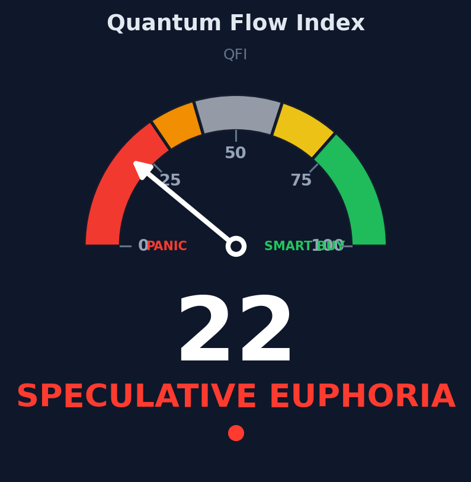

The QFI compresses rotation, smart-money positioning and derivatives pressure into a single 0-100 score. Updated daily from public data.

The QFI over time, with zone bands highlighted. One point per update cycle.
Each QFI value falls into one of five regimes. They tell you what the market looks like right now — not where it will go.
The QFI is a weighted average of three independent components, each normalized to [-1, +1] and rescaled to 0-100. All data comes from public, free APIs.
7-day performance of BTC & ETH versus a cluster of speculative altcoins (L1s, memes, AI tokens). Money rotating into BTC = cautious market. Money rotating into memes = late cycle.
Binance top-trader long/short ratio (by account size) vs the 30-day mean, crossed with the Fear & Greed Index. Big players buying while retail panics = often constructive.
Funding rate combined with 7-day Open Interest change. Crowded leveraged longs with rising OI = cascade risk. Crowded shorts = squeeze potential.
No. It's a regime indicator — a thermometer, not a crystal ball. It tells you what the market looks like right now. The same trade setup is statistically more reliable in SMART BUYING than in PANIC SELLING, but the QFI alone should never drive a trade decision.
Once per day, at the same UTC hour. This makes it a daily ritual — like checking the Fear & Greed Index — rather than a noisy intraday signal.
A 0-100 scale is universally intuitive and comparable to the Fear & Greed Index. Internally, the raw score still ranges -100/+100, but the public score is rescaled.
No. All data comes from free public endpoints: CoinGecko for prices, Binance Futures for top-trader ratios, funding and OI, and alternative.me for Fear & Greed.
Yes — the gauge PNG is always available at /data/qfi_gauge.png. Hotlinking is allowed with attribution.
No. The QFI is educational content. Trading involves risk of loss. Past performance doesn't guarantee future results. Only invest what you can afford to lose.